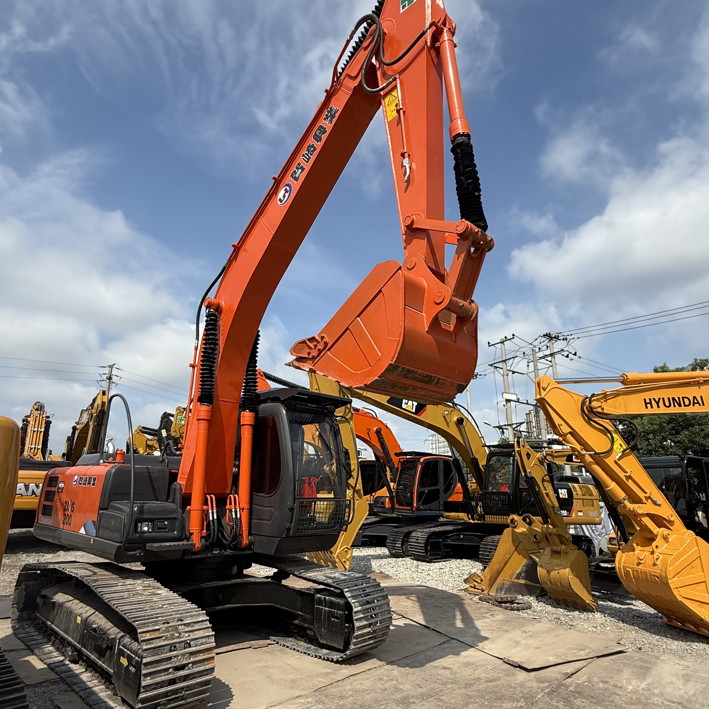

Refurbished Hitachi Zaxis 200 Excavator
The Hitachi Zaxis 200 Excavator is a versatile, high-performance machine that has made its mark in the construction, demolition, and material handling industries. Known for its excellent fuel efficiency, robust hydraulic system, and smooth operational control, the Zaxis 200 is perfect for tackling a variety of jobs. From excavation and trenching to lifting and grading, this excavator offers outstanding performance in various conditions.
Honestly, it's almost impossible to buy a brand new excavator from China. They either don't exist or are made in China. If a Chinese seller tells you their Caterpillar/Komatsu/Volvo/Kobelco/Hitachi is brand new, they're lying. Therefore, a refurbished excavator is your best bet.

Here are the detailed specifications for a refurbished Hitachi Zaxis 200 excavator (ZX200-5G or ZX200LC-5G):
Operating Weight and Dimensions
- Operating Weight:
- ZX200-5G: ~19,800 kg
- ZX200LC-5G: ~20,400 kg
- Transport Length: ~9.5–9.7 meters
- Transport Width: ~2.99–3.19 meters
- Transport Height: ~3.0–3.2 meters
- Tail Swing Radius: ~3.0–3.2 meters
- Track Width: 600 mm standard
- Undercarriage: Long carriage (LC) configuration
Engine and Powertrain
- Engine Model: Isuzu AH-4HK1X (Tier 2 or Tier 3 compliant)
- Rated Power Output: ~125 kW (168 hp) @ 2,000 rpm
- Fuel Tank Capacity: ~400 liters
- Travel Speed: ~5.5 km/h
- Swing Speed: ~11 rpm
- Drive Type: Hydrostatic with planetary final drives
Hydraulic System
- Main Pump Type: Dual axial piston pumps with HIOS III hydraulic system
- Flow Rate: ~2 × 270–300 L/min
- System Pressure: Up to 34.3 MPa
- Hydraulic Oil Capacity: ~300 liters
- Efficiency Features:
- Boom regenerative circuit
- Swing priority valve
- Auto hydraulic warm-up
- ECO mode for fuel savings
- 9% fuel reduction compared to ZX200-3
Performance Metrics
- Bucket Capacity: 0.51–1.20 m³ (ISO heaped)
- Max Digging Depth: ~6.5 meters
- Max Reach (Horizontal): ~10.5 meters
- Max Dump Height: ~6.8 meters
- Bucket Digging Force: ~150–160 kN
- Arm Digging Force: ~110–120 kN
Cab and Operator Features
- Cab Type: ROPS/FOPS certified
- Display: Multifunctional LCD monitor with diagnostics and ECO gauge
- Controls: Pilot-operated joysticks with auxiliary hydraulic circuit
- Comfort: Comfort-designed seat, HVAC, low-noise cab
- Visibility: Wide glass area, LED work lights, optional rear-view camera
Attachments Compatibility
- Standard Bucket: ~1.0 m³
- Optional Tools: Hydraulic breaker, demolition shear, ripper, compactor
- Quick Coupler: Hydraulic or manual quick hitch
Refurbishment Scope
Refurbished ZX200 units typically include:
- Engine Overhaul: Turbocharger, injectors, cooling system
- Hydraulic Restoration: Pump recalibration, valve block testing, hose replacement
- Electrical Diagnostics: Monitor, sensors, wiring harness
- Cab Reconditioning: Seat, joysticks, HVAC, repainting
- Structural Repairs: Boom/bucket welding, bushing replacement, undercarriage rebuild
Would you like a comparison with Komatsu PC200 or Caterpillar 320 next? I can also help you source refurbished ZX200 units from suppliers in Shanghai or Shandong.
Overview of the Hitachi Zaxis 200 Excavator
The Hitachi Zaxis 200 is a mid-sized, tracked hydraulic excavator designed to provide maximum performance, durability, and versatility. It’s ideal for both light and heavy-duty tasks in a wide range of industries. Whether you need to dig deep trenches, handle heavy materials, or perform fine grading work, the Zaxis 200 can handle the job with precision.
A refurbished Zaxis 200 goes through a rigorous reconditioning process, where worn parts are replaced with original Hitachi components to restore the machine to factory specifications. This process ensures that the excavator will perform like new, providing substantial cost savings compared to purchasing a brand-new unit.
Key Specifications of the Hitachi Zaxis 200 Excavator
The Zaxis 200 is designed for performance, offering a perfect blend of power, efficiency, and precision. Here are its key specifications:
-
Operating Weight: Approximately 20,000 - 22,000 kg (44,100 - 48,500 lbs)
-
Engine Power: 160 hp (119 kW)
-
Max Digging Depth: Up to 6.0 meters (19.7 feet)
-
Maximum Reach: 8.6 meters (28.2 feet)
-
Bucket Capacity: Typically 0.9 - 1.2 cubic meters (32 - 42 cubic feet)
-
Fuel Tank Capacity: Around 350 - 450 liters (92 - 119 gallons)
-
Travel Speed: Up to 5.5 km/h (3.4 mph)
These specifications enable the Zaxis 200 to tackle a wide range of tasks, including heavy lifting, deep trenching, and precise grading work, all while maintaining excellent fuel efficiency for reduced operating costs.
Performance and Efficiency of the Zaxis 200
The Hitachi Zaxis 200 is built to provide optimal performance, power, and efficiency, making it an ideal choice for businesses that need a machine capable of handling heavy-duty applications while also minimizing fuel consumption.
Performance Highlights:
-
Advanced Hydraulic System: The Zaxis 200 comes equipped with a highly efficient hydraulic system that ensures smooth, precise control of the boom, arm, and bucket. This system enables fast cycle times and improved productivity, especially when working with tough materials or large volumes of earth.
-
Fuel Efficiency: The Zaxis 200's fuel-efficient engine is designed to minimize fuel consumption without compromising on power. This helps businesses lower fuel expenses while maintaining high performance and operational efficiency.
-
Powerful Digging and Lifting: With its robust engine and hydraulic system, the Zaxis 200 is well-equipped to perform demanding tasks, such as deep trenching, lifting heavy loads, and clearing debris. Its impressive reach and digging depth make it an ideal choice for a wide variety of job sites.
-
Precision Control: The Zaxis 200 offers excellent control for operators, allowing them to work in tight spaces or with sensitive materials. The responsive controls and smooth operation ensure that operators can complete tasks accurately and efficiently.
Durability and Longevity of the Zaxis 200
The Hitachi Zaxis 200 is built for durability, ensuring that it can withstand the rigors of heavy use in challenging conditions. Whether working in harsh environments or with heavy materials, this excavator is designed to deliver years of reliable service.
Durability Features:
-
Reinforced Undercarriage: The undercarriage of the Zaxis 200 is designed to handle rough terrain and heavy workloads. The tracks, rollers, and sprockets are built to last, ensuring smooth operation even on uneven ground.
-
Long-Lasting Engine: The Zaxis 200 is powered by a highly reliable engine that is designed for long-term performance. With regular maintenance, this engine can provide thousands of hours of dependable service, making the machine a great investment for businesses.
-
Robust Hydraulic System: The hydraulic system of the Zaxis 200 is built to withstand high pressures and perform reliably over the long term. With its durable hydraulic components, the machine can operate at peak efficiency for extended periods, minimizing downtime.
Comfort and Safety of the Zaxis 200
Operator comfort and safety are paramount in the design of the Zaxis 200. The excavator is equipped with a spacious cabin, reduced noise and vibration levels, and several safety features that make it a comfortable and secure machine to operate.
Comfort and Safety Features:
-
Spacious and Ergonomic Cabin: The Zaxis 200 features a roomy cabin with ergonomic controls and an adjustable seat to help reduce operator fatigue during long shifts. The cabin also provides excellent visibility of the work area, which aids in precision and safety.
-
Noise and Vibration Reduction: The cabin is designed to minimize noise and vibration, creating a quieter and more comfortable environment for the operator. This reduces operator fatigue and helps maintain focus, even during extended hours of operation.
-
Safety Features: The Zaxis 200 is equipped with Roll Over Protection (ROPS) and Falling Object Protection (FOPS) to protect the operator in hazardous environments. The machine also features a stable design, with a low center of gravity that enhances safety when working on uneven ground.
Versatility and Attachments for the Zaxis 200
The Zaxis 200 is highly versatile and can be fitted with a range of attachments to suit various tasks. Whether you need to dig, lift, grade, or demolish, the Zaxis 200 can be adapted to handle a wide variety of applications.
Common Attachments for the Zaxis 200:
-
Buckets: The Zaxis 200 can be equipped with various bucket attachments, including general-purpose, heavy-duty, and grading buckets. These buckets typically range from 0.9 to 1.2 cubic meters (32 - 42 cubic feet), making them suitable for digging, material handling, and grading.
-
Hydraulic Breakers: For demolition work, the Zaxis 200 can be equipped with a hydraulic breaker, which allows it to easily break concrete, rock, and other hard materials.
-
Augers: Auger attachments are ideal for drilling precise holes for foundations, posts, or other applications requiring deep, narrow holes.
-
Grapples: For material handling, the Zaxis 200 can be fitted with grapple attachments to lift and transport heavy materials, such as scrap metal, logs, or debris.
-
Quick Couplers: Quick couplers allow operators to quickly change between different attachments, minimizing downtime and improving productivity.
Benefits of Purchasing a Refurbished Hitachi Zaxis 200 Excavator
Buying a refurbished Zaxis 200 provides several benefits, particularly for businesses that want to save on equipment costs without sacrificing quality or performance.
Key Benefits:
-
Cost Savings: Refurbished Zaxis 200 excavators are significantly more affordable than new models. Businesses can obtain a high-performance machine at a lower upfront cost, helping them stretch their budget further.
-
Thorough Inspection and Reconditioning: Refurbished units undergo a comprehensive inspection and reconditioning process. All worn parts are replaced with genuine Hitachi components, ensuring that the machine performs at its best.
-
Warranty: Many refurbished Zaxis 200 units come with a warranty, providing peace of mind for businesses in case of unexpected mechanical issues. This warranty ensures the machine’s continued performance.
-
Sustainability: Purchasing refurbished equipment is an environmentally responsible choice, as it helps extend the lifespan of existing machinery and reduces waste.
Maintenance Tips for the Hitachi Zaxis 200 Excavator
Regular maintenance is essential to ensure that the Zaxis 200 continues to operate efficiently and lasts for many years. Here are some maintenance tips:
Maintenance Recommendations:
-
Engine Maintenance: Check engine oil regularly, replace air filters, and monitor coolant levels to prevent overheating and ensure optimal engine performance.
-
Hydraulic System: Inspect hydraulic hoses for leaks and replace hydraulic filters as necessary. A clean hydraulic system ensures smooth and efficient operation.
-
Undercarriage: Inspect the undercarriage, particularly the tracks and sprockets, for signs of wear. Replace any damaged parts promptly to avoid further damage.
-
Attachments: Check attachments such as buckets, grapples, and augers for wear and tear. Replace or repair damaged parts to maintain functionality and efficiency.
Conclusion
The Hitachi Zaxis 200 Excavator is a powerful and reliable machine that offers outstanding performance, fuel efficiency, and durability. Purchasing a refurbished Zaxis 200 provides an affordable way to acquire a high-quality machine that performs like new. With proper maintenance, the Zaxis 200 can continue to serve your business for many years, making it a wise investment for construction and material handling applications.
Our Commitment
- 2 years / 4000 hours warranty.
- EPA certified.
- No sweatshop labor.
Contacts

- [email protected]
- Youtube Instagram Facebook
- Navigation: G206 (Sishu Bridge) in Changfeng County, Hefei City, Anhui Province, 200 meters north to the east